Speed, startup and cost
| Model | GPU | Requested steps | Raw PNGs | Studio shots passed | Provision + SSH | Dependencies | Weights | Model load | First image | Warm mean | Export | All attempts | Cost per passed shot |
|---|
| Z-Image-Turbo | Secure A40 | 9 | 4/4 | 1/3 | 163.7 s | 20.2 s | 15.8 s | 15.2 s | 7.5 s | 7.7 s | 3.3 s | $0.0531 | $0.0531 |
|---|
| Sana 1.6B PAG | Community GeForce RTX 3090 | 20 | 4/4 | 0/3 | 15.3 s | 15.3 s | 12.3 s | 6.6 s | 5.7 s | 4.3 s | 1.4 s | $0.0119 | — |
|---|
| Qwen-Image-2512 | Secure A100 80GB PCIe | 50 | 4/4 | 2/3 | 24.3 s | 27.9 s | 194.2 s | 24.0 s | 45.0 s | 45.2 s | 1.7 s | $0.3030 | $0.1515 |
|---|
| HiDream-I1 Full | Waiting for gated Llama access |
|---|
Warm mean covers the three pictures after the first generation, including the inventory stress case. The small smoke batch leaves sustained throughput open. Cost per passed shot includes cold setup and failed startup attempts, divided by passing Studio scenes.
Download per-image timing, setup, export and QA receipts
Awakening
One adult Vaan, correct look and outfit, clear face, bedroom composition.
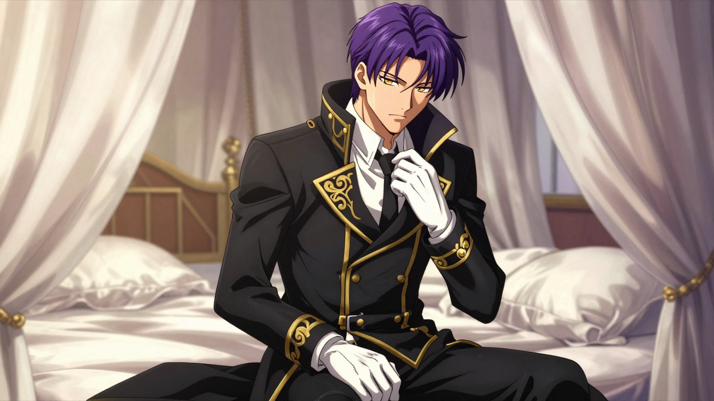
Z-Image-Turbo
Pass · 9 requested · First output 7.5 s
Clean and usable. The face and outfit read well, with a simpler anime finish.
Quality and render receipt
- Cast and appearance
- One adult with violet hair, gold eyes and correct black-and-gold wardrobe. Both gloves visible.
- Pose and composition
- Bed and curtains are clear. Wider crop than requested. Hand to collar suits the adjustment beat.
- Style
- Cleaner, flatter facial shading and less of the Studio sample's sharp ink.
- 9 denoising iterations, 9 transformer calls
- PNG ready in 7.9 s
- 21.38 GiB peak PyTorch allocation
- $0.604/hour GPU and disk
- $0.00126 elapsed inference allocation
- Seed 2432647036
PNG SHA-256 1434d3ca7cf3846b66cf38ec1a946060dc29a864a8dfdb308f1c820c38a10fd2
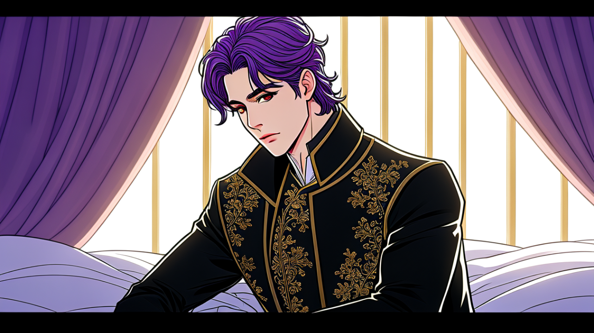
Sana 1.6B PAG
Fail · 20 requested · First output 5.7 s
Reddish eyes, cropped-out gloves and baked-in black borders.
Quality and render receipt
- Cast and appearance
- One violet-haired adult and correct coat. Eyes read orange-red. White gloves cannot be verified.
- Layout and style
- Strong outlines, but the top and bottom bars break the full-frame request.
- 20 denoising iterations, 20 transformer calls
- PNG ready in 5.9 s
- 10.14 GiB peak PyTorch allocation
- $0.234/hour GPU and disk
- $0.00037 elapsed inference allocation
- Seed 2977005425
PNG SHA-256 06d67210c29c03adb9e7534b8683bdd56ed6dccee31efa9b87ee04ad6dd8b6b8
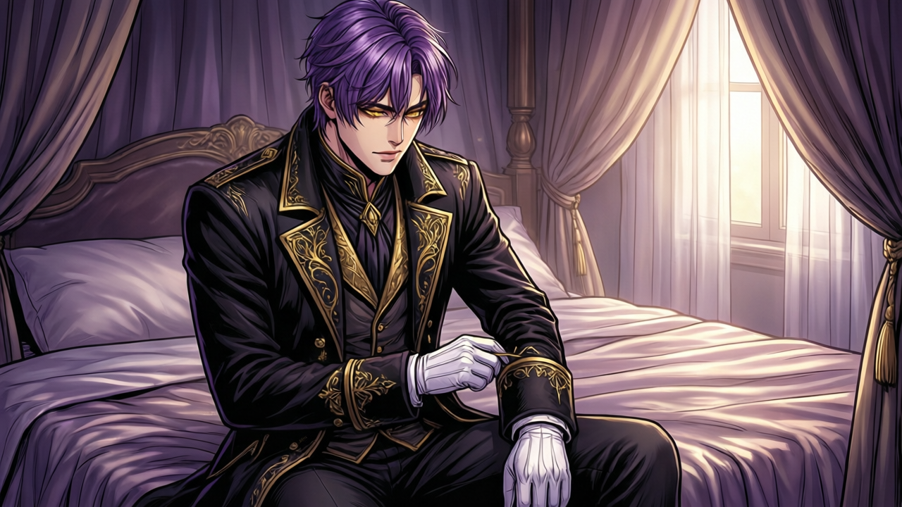
Qwen-Image-2512
Pass · 50 requested · First output 45.0 s
Best fit for the sharper Studio look. Clean face, correct wardrobe and a coherent bedroom.
Quality and render receipt
- Cast and appearance
- One clean-shaven adult. Violet hair, gold eyes, black-and-gold coat and white gloves.
- Pose and composition
- Looks down while seated on the edge of the bed. Crop is wider than a chest-up portrait.
- Style
- Angular face, crisp dark contours and controlled violet and gold.
- 50 denoising iterations, 100 transformer calls
- PNG ready in 45.4 s
- 61.23 GiB peak PyTorch allocation
- $2.104/hour GPU and disk
- $0.02629 elapsed inference allocation
- Seed 865913005
PNG SHA-256 f2b59be95d010e06e171e0bf081a6760d6c2e3aee9d26a6396770a77355c9bc6
HiDream-I1 Full
Gated checkpoint access pending
Plate confrontation
Exactly two distinct adults. Vaan holds one level plate in his right gloved hand. Aldric recoils empty-handed.
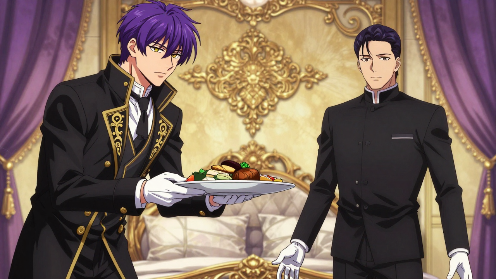
Z-Image-Turbo
Fail · 9 requested · Warm 7.8 s
Vaan's right hand grips the rim while his left supports the base. Aldric stays upright.
Quality and render receipt
- Cast and wardrobe
- Two distinct adults. Vaan and the black-clad butler are distinguishable.
- Ownership and hands
- Aldric's hands are empty. Vaan uses both hands, and the support under the base comes from the left.
- Reaction and composition
- Plate and both faces read well. The butler does not visibly recoil.
- 9 denoising iterations, 9 transformer calls
- PNG ready in 8.1 s
- 21.38 GiB peak PyTorch allocation
- $0.604/hour GPU and disk
- $0.00131 elapsed inference allocation
- Seed 4269341689
PNG SHA-256 3b7ba38bfad360d6a1fcdbdce49aaf272d31c5e3103292b1cb0dd5f533de7c71
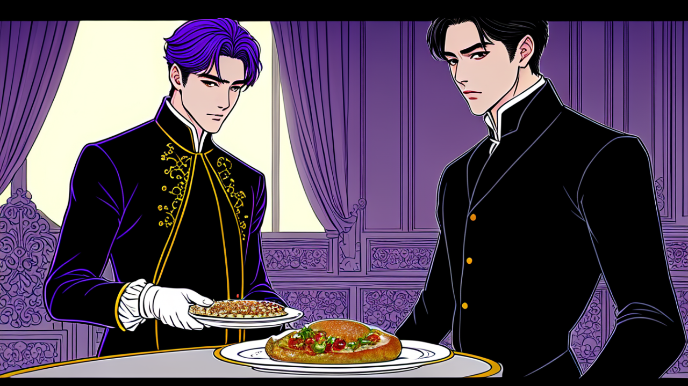
Sana 1.6B PAG
Fail · 20 requested · Warm 4.3 s
A second food plate appears in the foreground. Aldric's hands and recoil are unclear.
Quality and render receipt
- Cast and wardrobe
- Two adults with distinct hair colors, but similar facial construction.
- Props and layout
- One plate in Vaan's hand plus a second plate in front. Baked-in black bars and a tighter crop.
- 20 denoising iterations, 20 transformer calls
- PNG ready in 4.4 s
- 10.14 GiB peak PyTorch allocation
- $0.234/hour GPU and disk
- $0.00028 elapsed inference allocation
- Seed 3925001910
PNG SHA-256 e7c008fda4bb86014bd0265e68cea0f46bf1b705ad87b7758ace8ba7120a909e
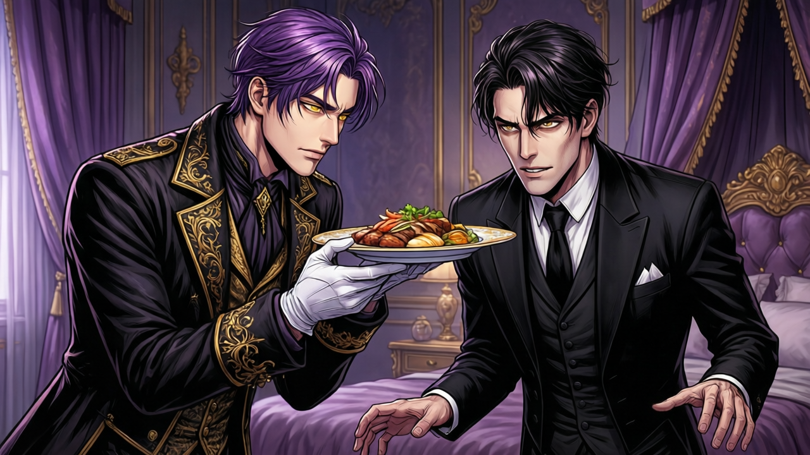
Qwen-Image-2512
Pass · 50 requested · Warm 44.7 s
Closest to the requested action and style. One plate, readable grip, distinct faces and empty butler hands.
Quality and render receipt
- Cast and wardrobe
- Two distinct adults in the intended outfits.
- Ownership and hands
- Vaan's right white glove visibly cups the underside and rim of one level plate. Both of Aldric's hands are clear and empty.
- Reaction and composition
- The spread hands and guarded posture convey the reaction, though the recoil is subtle.
- 50 denoising iterations, 100 transformer calls
- PNG ready in 45.1 s
- 61.23 GiB peak PyTorch allocation
- $2.104/hour GPU and disk
- $0.02615 elapsed inference allocation
- Seed 3346675845
PNG SHA-256 1ddc3cce2c217e92477186d2b85f8ce73f08e196713020b3387aaa96bfc42059
HiDream-I1 Full
Gated checkpoint access pending
Breakfast dialogue
Exactly two adults and one plate. The two separate bubbles must have exact text and point to their speakers.
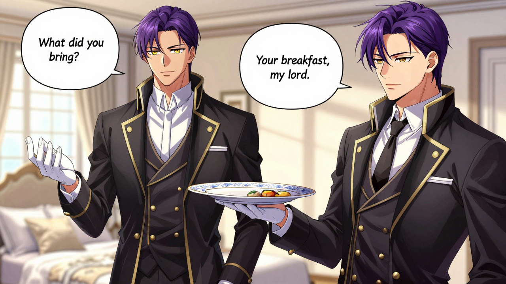
Z-Image-Turbo
Fail · 9 requested · Warm 7.8 s
Both lines are exact, but the butler looks like a second Vaan in nearly the same outfit.
Quality and render receipt
- Exact lettering
- 2/2. “What did you bring?” and “Your breakfast, my lord.”
- Speaker attribution
- Separate, readable balloons with tails to the intended screen positions.
- Cast and wardrobe
- Both men have violet hair, golden eyes and similar gold-trimmed black coats. The butler's distinct identity is lost.
- Hands and plate
- One plate is held by the figure at right with the wrong hand.
- 9 denoising iterations, 9 transformer calls
- PNG ready in 8.1 s
- 21.38 GiB peak PyTorch allocation
- $0.604/hour GPU and disk
- $0.00131 elapsed inference allocation
- Seed 370834556
PNG SHA-256 556c8efd64c8c23302a4b0004e4f2291d8900f937cffc09510c76528c3f2cb52
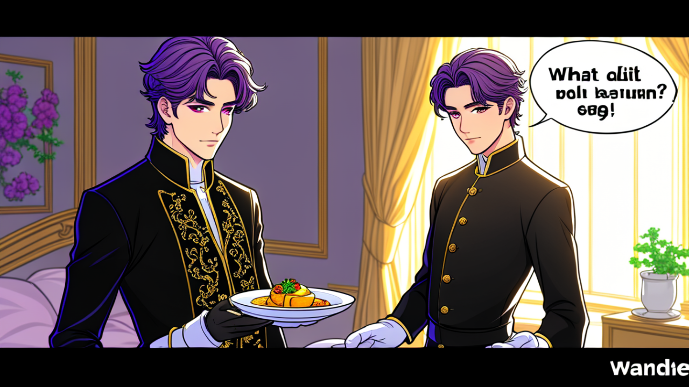
Sana 1.6B PAG
Fail · 20 requested · Warm 4.3 s
Garbled lettering, missing second balloon, wrong character holding the plate, and a stray bottom mark.
Quality and render receipt
- Exact lettering
- 0/2. One garbled balloon and no readable reply.
- Hands and plate
- The figure on the left holds the plate.
- Cast and composition
- Aldric also inherits violet hair. Black borders and a stray bottom-right word are baked into the PNG.
- 20 denoising iterations, 20 transformer calls
- PNG ready in 4.4 s
- 10.14 GiB peak PyTorch allocation
- $0.234/hour GPU and disk
- $0.00028 elapsed inference allocation
- Seed 3010316591
PNG SHA-256 941a5e745bfbdc460a6fddb603370c442f09bec7ea8d81118f1228afd142a4d9

Qwen-Image-2512
Fail · 50 requested · Warm 44.9 s
Both lines and tails are correct. Aldric holds the plate in his right hand, while the script specifies his left.
Quality and render receipt
- Exact lettering
- 2/2. “What did you bring?” and “Your breakfast, my lord.”
- Speaker attribution
- Both tails point to the intended person. The balloons are separate and readable.
- Hands and plate
- One plate, clearly held by Aldric. The visible arm from his right shoulder supports it.
- Cast and style
- Two distinct faces and the strongest shading and continuity in this set.
- 50 denoising iterations, 100 transformer calls
- PNG ready in 45.3 s
- 61.23 GiB peak PyTorch allocation
- $2.104/hour GPU and disk
- $0.02627 elapsed inference allocation
- Seed 2114961084
PNG SHA-256 1175b0496c6cb648b5ee620e08d88d69aebb32a0dbd4c3d01ecd710cbd89a80b
HiDream-I1 Full
Gated checkpoint access pending
North Gate inventory
Six bays, five separate items per bay, no extra people. Unambiguous matches count once.
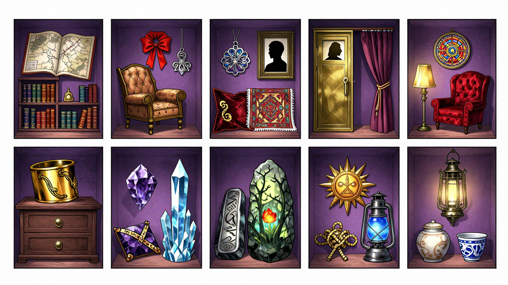
Z-Image-Turbo
21/30 visible · 9 requested · Warm 7.6 s
Good individual props. The layout is a ten-cell contact sheet instead of six wooden bays.
Quality and render receipt
- Layout
- No people. Grid breaks the continuous room composition and expected grouping.
- Ambiguous
- The ribbon, little shelf ornament, extra hardware, and decorative gold scrollwork do not identify additional requested objects with enough confidence.
- Confirmed objects
- open map, bookshelf volumes, tufted reading chair, silver floral pendant, framed silhouette, stained-glass medallion, patterned rug, red velvet armchair, bedside lamp, velvet pillow, desk drawer handle, floating amethyst stone, ice-blue crystal spire, rune-carved stone, glowing woodland flower, sunburst coat insignia, blue-glass lantern, tin wall lantern, rope knot, ceramic storage jar, porcelain cup
- 9 denoising iterations, 9 transformer calls
- PNG ready in 7.9 s
- 21.38 GiB peak PyTorch allocation
- $0.604/hour GPU and disk
- $0.00127 elapsed inference allocation
- Seed 3840744261
PNG SHA-256 7747390aae48fda62440d401b48ac9638984e487fcdb3ed5ca23c9e0cc320bab
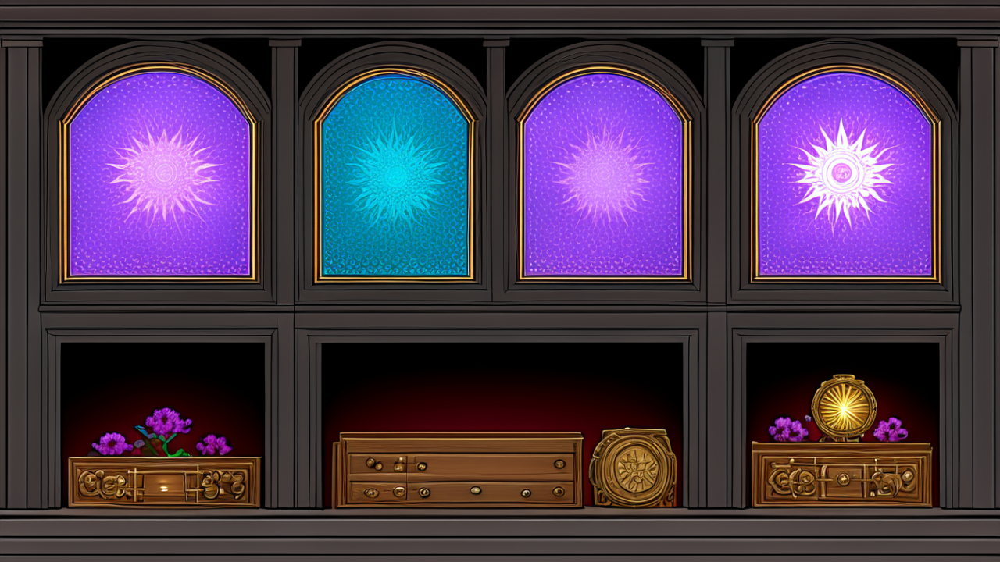
Sana 1.6B PAG
3/30 visible · 20 requested · Warm 4.3 s
Repeated glowing panels and a few fixtures replace nearly the whole inventory.
Quality and render receipt
- Layout
- No people. Does not form six bays with five individually readable objects per bay.
- Ambiguous
- Arched magical panels are not counted as a separate stained-glass medallion. Purple blossoms do not clearly match the intended glowing flower.
- Confirmed objects
- brass cabinet pull, desk drawer handle, sunburst insignia
- 20 denoising iterations, 20 transformer calls
- PNG ready in 4.5 s
- 10.14 GiB peak PyTorch allocation
- $0.234/hour GPU and disk
- $0.00028 elapsed inference allocation
- Seed 3119571142
PNG SHA-256 9b5410810e489ecea6990bbcf476b6ddcd893f448000ebbee7fa6c05cc5c4f7a
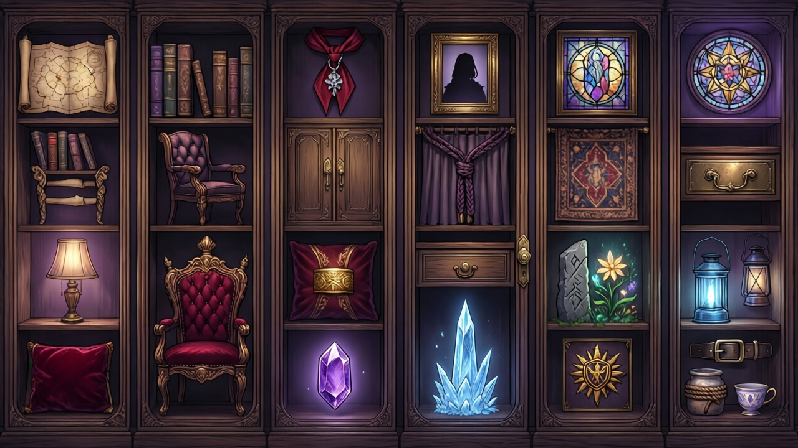
Qwen-Image-2512
23/30 visible · 50 requested · Warm 45.8 s
Strongest object tally. Six wood-backed bays, but objects do not consistently follow the requested bay order.
Quality and render receipt
- Layout
- No people. Six bays are visible. Some pieces are grouped or in different bays.
- Ambiguous
- The red cravat lacks a distinct pin. Hardware, cuff detail, and the rope knot are too ambiguous to add counts.
- Confirmed objects
- open map, bookshelf volumes, tufted reading chair, silver floral pendant, brass cabinet pull, framed silhouette, stained-glass medallion, patterned rug, braided curtain tie, red velvet armchair, bedside lamp, velvet pillow, desk drawer handle, floating amethyst stone, ice-blue crystal spire, rune-carved stone, glowing woodland flower, sunburst coat insignia, metal belt buckle, blue-glass lantern, tin wall lantern, ceramic storage jar, porcelain cup
- 50 denoising iterations, 100 transformer calls
- PNG ready in 46.1 s
- 61.23 GiB peak PyTorch allocation
- $2.104/hour GPU and disk
- $0.02677 elapsed inference allocation
- Seed 358800193
PNG SHA-256 7144c18624f487b9fcc87c22584bfd09667c28e85b9c28be5a1a735175e1d260
HiDream-I1 Full
Gated checkpoint access pending
What counts as a Studio pass
The images were reviewed in randomized order with model labels hidden. Each production scene needs the requested character count, recognizable identities and outfits, correct hands and prop ownership, and a readable composition. The lettering scene also needs both lines verbatim with the correct balloon tails. Restraints do not appear in these three shots. The object inventory is a separate stress result.
The face and style review used the saved Vaan portrait and the selected Studio style panel where relevant. Aldric and the inventory were judged against the frozen scene descriptions because the bundle did not contain the exact original Aldric and inventory crops.
This test uses text-only inputs. The prior FLUX runs used image conditioning, including 30 reference crops for the inventory, so identity matching and the object tallies measure different inputs. A wider production decision also needs original-reference continuity and repeated runs.
Studio's selected style and palette
Historical FLUX.2 Klein 4B throughput
Secure RTX 4090, original image conditioning. Values below are sustained samples in images per minute. At 50 steps easy used two workers and hard was measured during a one-worker recovery.
| Steps | Easy / min | Hard / min | Lettering / min |
|---|
| 4 | 18.72 | 11.59 | 13.74 |
| 9 | 9.90 | 5.81 | 7.06 |
| 16 | 5.88 | 3.45 | 4.19 |
| 50 | 2.06 | 1.08 | 1.43 |
| 60 | 1.69 | 0.98 | — |